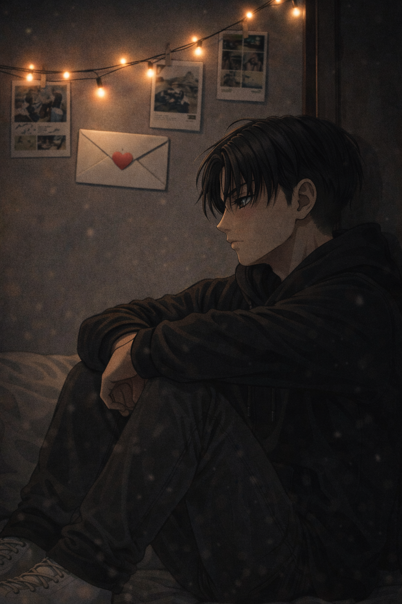

Cold Night
Levi — POV

They stopped talking for a day.
It wasn’t intentional.
Not a punishment. Not a tactic.
Just space — sharp, sudden, necessary.
The argument had been ugly in the way only old wounds could be.
Exes. Past lives.
The kind of jealousy that didn’t make sense once spoken aloud,
but had already done its damage by then.
Levi remembered Eren’s voice tightening.
His own words coming out too cold, too precise,
meant to defend but landing like accusations.
So they separated for the night.
To cool down. To think.
Levi thought.
That was the problem.
At first, the silence felt manageable.
He cleaned. Organized.
Did things that usually helped him regain control.
The apartment looked perfect within an hour.
Inside, he wasn’t.
Time stretched.
Each minute pressed heavier than the last.
Levi checked the clock without meaning to.
Eren should be at work by now.
He always sent a message when he arrived.
Nothing.
Levi tried to focus.
His thoughts circled, tightening like a noose.
He replayed the fight — every sentence, every look.
Tried to justify himself.
Tried to find the fault in Eren instead of the fear in his own chest.
It didn’t work.
He checked the time again.
He must be on his break.
Still nothing.
The absence grew teeth.
It wasn’t just silence anymore — it was wrongness.
Eren always let him know.
Always made sure Levi didn’t have to wonder.
Levi sat on the edge of the bed, staring at nothing.
The world dulled around him.
His body moved on autopilot while his mind slipped somewhere darker, quieter.
Dissociation came easily when he was tired enough.
He imagined a life without Eren.
The thought didn’t even finish forming before it hollowed him out completely.
No mornings together.
No shared routines.
No quiet updates about safe arrivals.
No warmth in the spaces he didn’t realize were cold
until Eren filled them.
His chest tightened painfully.
I can’t do this.
The realization wasn’t dramatic.
It wasn’t desperate.
It was absolute.
Whatever he felt — jealousy, fear, anger —
none of it outweighed this one certainty:
living without Eren was not an option.
Not a possibility his mind could survive.
Love, he understood then, wasn’t comfort.
It was dependency without weakness.
Attachment without apology.
By the time Levi reached for his phone,
his hands were steady.
His resolve was not.
Are you home?
He erased it.
Are you okay?
Three dots appeared almost instantly.
I was going to ask you the same thing.
Levi didn’t wait.
He put his coat on and left.
Eren opened the door before Levi knocked.
One look at him and Levi’s chest clenched all over again.
Eren looked like hell.
Dark circles under his eyes.
Shoulders tense.
And his upper lip — red, irritated, raw.
Levi knew what it meant.
Eren always did that when his anxiety spiraled beyond control,
worrying the skin unconsciously until it betrayed him.
“You didn’t sleep,” Levi said quietly.
“Neither did you,” Eren answered.
Levi didn’t give himself time to think.
He stepped forward and pulled Eren into him,
hard enough that the air left both of them in a sharp breath.
Eren made a small sound — surprised, broken —
before his arms came up just as tightly,
fingers digging in like he was afraid Levi might disappear again.
Their foreheads knocked.
Chests pressed.
Breathing uneven, shared.
Levi held on like it was instinct.
Like letting go would mean losing him for real.
“I’m sorry,” Levi said against his shoulder.
“I spiraled.”
“Me too,” Eren whispered.
Levi pulled back just enough to look at him.
Lifted a hand, thumb brushing gently over the irritated skin.
“You do this when you’re scared. You should have called me”
Eren swallowed.
“I hate that you notice everything.”
Levi’s voice stayed low, steady.
“I hate that I love you enough to be scared.”
They didn’t try to solve anything.
Didn’t reopen the fight.
They stayed there instead.
Arms tight.
Bodies close.
Recovering in the same space.
“I can’t lose you,” Eren said.
Levi closed his eyes.
“You won’t,” Levi answered.
“I'm not going anywhere.”
“We’ll get through this,” Eren said.
“We always do.”
Levi breathed him in.
Grounded.
Whole again.
And for the first time in twenty-four hours,
the world made sense.
They didn’t move far from the doorway.
They didn’t talk about what came next.
They simply stayed close, and from there,
the night unfolded naturally — together.
The bed felt different than it had the night before.
Not empty. Not uncertain.
It felt like somewhere to return to.
Eren lay on top of Levi, their bodies aligned, weight warm and grounding.
Levi’s hands settled at Eren’s back — not gripping, not restraining,
just holding, as if confirming he was real each time he exhaled.
Eren buried his face against Levi’s neck,
then shifted, pressing a small kiss to his jaw.
Then another.
And another.
Slow. Unhurried. Not seeking anything.
Just existing there — affection without demand.
Levi closed his eyes and breathed in.
Eren’s scent — familiar, steady, impossibly safe —
settled into his lungs like something he had been missing all day.
He tightened his arms, just a little.
“Don’t go far,” he murmured.
“I’m not going anywhere,” Eren whispered back.
Silence came again, but it wasn’t sharp this time.
It was shared.
Eren’s fingers traced slow paths across Levi’s shoulder,
then he lifted his head just enough to kiss his cheek,
the bridge of his nose,
the corner of his mouth.
Small reassurances in the shape of touch.
“I love you,” Eren said quietly,
like a truth he’d been waiting to set down.
Levi swallowed, the words steady when they came.
“I love you more.”
Another kiss.
Another breath.
“Never again,” Eren whispered.
“Not like that. Not that silence.”
Levi didn’t disagree — but he didn’t erase what they’d felt either.
“We’ll stumble,” he said softly.
“We’ll get scared. I'll get jealous sometimes.”
His hand slid up, fingers curling into Eren’s hair.
“But we do it together.”
“Together,” Eren echoed. “Always.”
They stayed awake like that for a long time.
Not restless — just unwilling to lose the closeness.
Every so often, Eren would press another kiss to Levi’s temple,
or the curve of his cheek,
and Levi would respond only by tightening his embrace,
breathing him in again,
grounding himself in warmth and heartbeat and presence.
No fixing.
No rewriting the past.
Just two people
choosing each other again in the quiet.
And somewhere between one breath and the next,
they finally slept —
still wrapped around one another,
still home.
Dawn came softly.
No alarms. No sharp sounds.
Just a pale, patient light slipping through the curtains,
brushing across the room like it was afraid to disturb them.
Levi woke first.
Not with a start — not with that hollow, anxious jolt from the night before —
but slowly, gently,
as if his mind had checked first to make sure Eren was still there
before letting him fully surface.
He didn’t move.
Eren was still lying on top of him,
weight heavy and reassuring,
one arm curled across Levi’s chest,
their legs tangled beneath the sheets.
His breathing was steady now.
Deep. Peaceful.
The kind of sleep he hadn’t managed in far too many hours.
Levi let his eyes trace the details he already knew by heart.
The soft crease between Eren’s brows that lingered even in rest.
The faint redness at his upper lip — calmer now, healing.
A loose strand of hair falling across his forehead.
He brushed it back carefully, so carefully,
like touching something precious.
Eren didn’t stir.
He only breathed in a little deeper,
pressing closer in his sleep,
as if his body trusted Levi’s presence
before his mind could catch up.
Levi exhaled.
The ache from yesterday still existed — jealousy, fear, all of it —
but it no longer swallowed him.
It lived here instead,
next to warmth,
next to forgiveness,
next to the quiet fact
that they had chosen each other again.
He pressed a small, barely-there kiss
to Eren’s hairline.
“You’re here,” he whispered,
not for Eren to hear — just to let the truth sit in the room.
Eren shifted, murmured something unintelligible,
and tightened his hold,
as if answering without waking.
Levi smiled — small, private — and closed his eyes again.
Not to sleep.
Just to stay.
Morning could wait.
The world could wait.
For now, there was this:
breath and heartbeat,
weight and warmth,
two people who had gone too close to losing each other,
and had chosen, quietly,
not to.
The cycle, at last,
closed where it always did —
in the simple certainty
of being here.
Together.